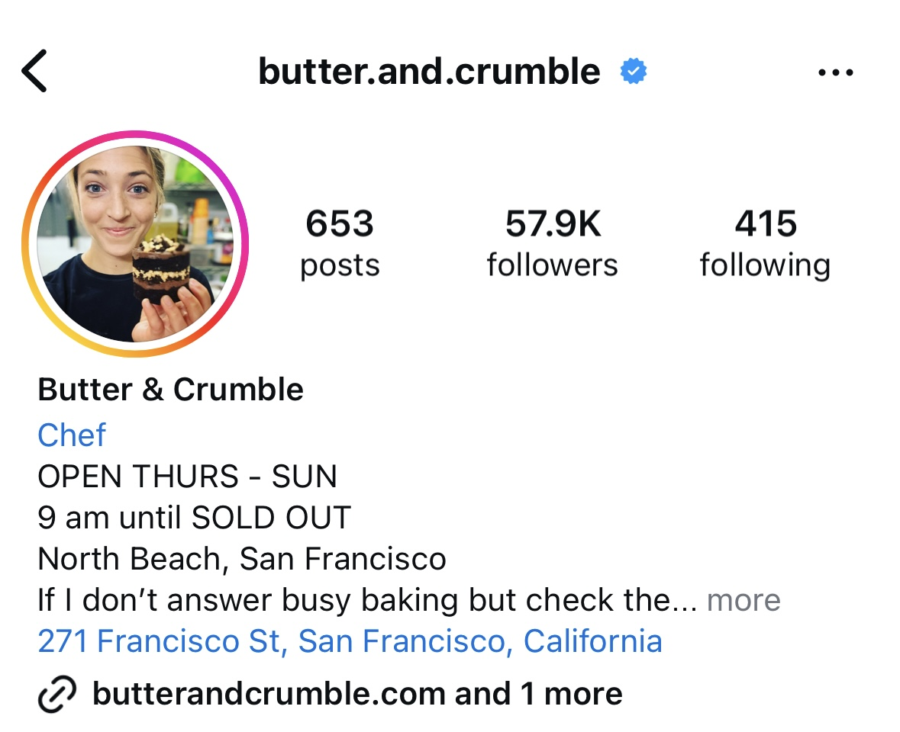
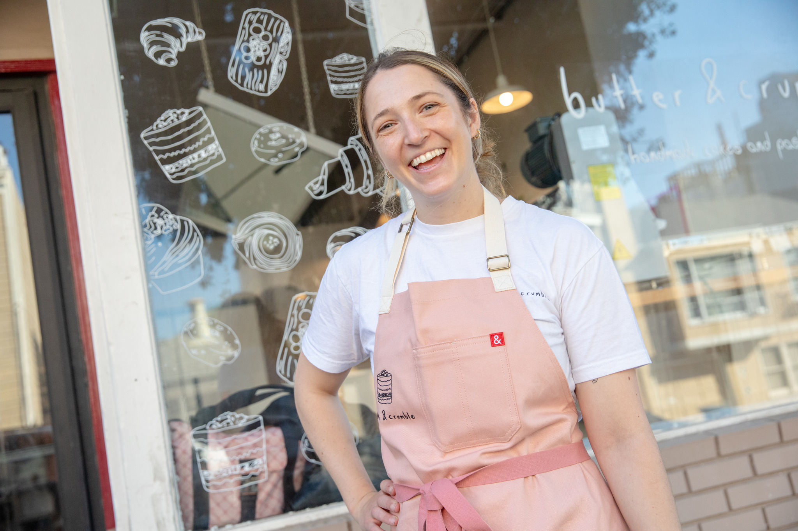

by Ryan

The rain didn’t stop Darren Chamdra and Vionna Limmena from lining up outside Butter & Crumble. On a February morning, they arrived at the North Beach bakery at 9:30 a.m. and did not leave with pastries in hand until an hour and a half later — after waiting in a line that winded down Francisco Street and halfway up the block on Stockton.
“We've seen reviews of this bakery so much on social media, and I'm a big fan of pastries, so we figured we'd try it out,” Limmena said. “We have really high expectations.”
Butter & Crumble is just one of the many bakeries in San Francisco that are part of the city’s bakery boom. Establishments like Arsicault, Grand Opening, Loquat, Juniper and more are growing in popularity, particularly for their croissants. Fueled by a “treat yourself” mindset and a wanting for warm, feel-good foods post-pandemic: San Franciscans are infatuated with croissants. Butter & Crumble is the fruit of this obsession.
Sophie Smith founded Butter & Crumble as a pop-up bakery inside A16, a pizza restaurant in the Marina district, when it was closed for the pandemic. A line cook with experience from culinary school, Smith found a passion for baking in the restaurant’s empty kitchen, where she began toying around with cake recipes and started selling to family and friends.
Once the pop-up grew in popularity, partially due to social media, Smith took a three-month pastry course in Paris to learn new techniques and refine her baking skills. After a month-long internship at a Parisian bakery, Smith returned to the Bay and began experimenting with croissants and other pastry types. Alongside her assistant and co-founder, Nicki Volante, Smith started selling pastries at the pop-up. They were an instant hit.

“I think that my savory culinary background has really helped us and really made our pastries stand out,” Smith said. “Pastry chefs are not trained to use that much salt. Even with our sweet pastries, we're constantly adding Maldon and a lot of seasonings.”
Smith and Volante soon became overwhelmed with the demand, with only the two of them doing the baking. Smith figured that the only way to have a more balanced lifestyle and successful business was to expand to a physical location.
Butter & Crumble opened at 271 Francisco St. in October 2023. In just over one year, it has garnered a cult following of both locals and tourists. Customers begin lining up outside of the bakery an hour before its 9 a.m. open time — and wait up to two hours for pastries.
Social media posts are what catapulted Butter & Crumble to popularity. Influencers on platforms like TikTok, Instagram and YouTube have posted reviews and recommendations of Butter & Crumble’s pastries.
Butter & Crumble’s own Instagram account has over 56,000 followers, but the bakery has never partnered with any influencers, Smith said, and posts have “never been calculated.”
“We don't have to think about getting people in the door and getting the word out there. We just have to make really good pastries,” Smith said. “That has been really freeing.”
Yet, there is a flip side to the large social media attention Butter & Crumble has garnered.
“All of that influencer content is organic, which is awesome, but it also just creates this hype that feels like it's impossible to meet,” Smith said.

For some customers, though, the hype is the point. Those standing in line see a different side of the trend: the camaraderie and the anticipation for something special.
“That’s part of the fun of the bakery — just waiting,” said North Beach resident Neil Mirchandani. “If they lose that, they might lose some charm, or lose some of the fun of it.”
Over Mirchandani’s three visits to the bakery, the wait has become a way to meet neighbors, exchange recommendations and experience the city in a new way.

As long as people are willing to embrace the wait, the long line doesn’t just signal popularity — it creates it. When Butter & Crumble first opened, Mirchandani recalled walking by the establishment and seeing just a small crowd. But now, with lines stretching around the block and a steady stream of social media buzz, the bakery is impossible to ignore.
“I feel like, sometimes, when there’s a really long line, maybe it’s really good and I want to try it,” said Chicago resident and former Northwestern student Ellie Garcia, who was willing to spend over an hour in the queue with her friends.
Smith does not like the term “trendy.” To her, something that is trendy is ephemeral.
“The concept of being overhyped is a really hard one for businesses like ours to try and rumble with,” Smith said. “We didn't try to create hype; it kind of happened. And every day we have to think about, ‘What if, one day, everyone realizes that we're overhyped, and everyone stops coming?’”
With so many positive reviews from influencers and an impressive line displaying the demand for their pastries, those lining up to visit Butter & Crumble are cognizant of the hype surrounding the bakery. They know the pastries should be good, and should be worth the long wait.
And with social media buzzing around Butter & Crumble for over a year now, Smith said she often wonders what will happen when the excitement inevitably dies down. Smith finds the “trendy” title difficult: is it a fad or a path to eternal success?
“I am constantly fighting my internal dialog of, ‘Am I good enough?’” Smith said. “Every month I go through this feeling of, ‘Is this menu going to be as good as last month, and is it good enough? Are people going to be disappointed when they walk in?’”
But, to Bay Area food influencer Rosemarie Dehesa of @foodiesushiqueen, trendiness is positive in the long run and not something to worry about.
“I feel like as long as they're still consistent with their pastries, people are going to still try it,” Dehesa said. “A lot of locals, even myself, still go to places that they still love to eat at from 10 years ago, 20 years ago.”
Indeed, Butter & Crumble has had no problems up to this point.
Smith said that with Butter & Crumble’s growth in popularity, many are suggesting expanding the business and opening more locations, but this is not yet part of her plan.
The beauty of Butter & Crumble is its small community and authenticity. Its pastries are an all-hands-on-deck process: everyone in the women-run business plays a role in flavor testing and bringing ideas to fruition. Operating out of one small location is how Smith cultivates a close, warming culture — and, of course, delicious pastries.
“From a customer perspective, the world is difficult right now, and I think pastries and having that sense of comfort is really hitting home with a lot of people,” Smith said. “I do think bakeries are having a moment. Hopefully, it's a trend that sticks around, but I'm loving it while it's happening.”